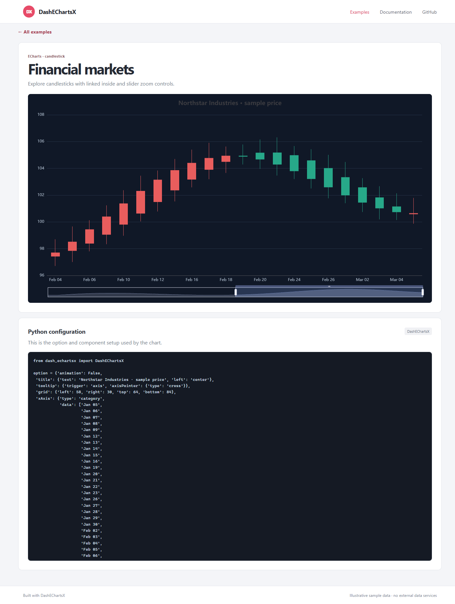
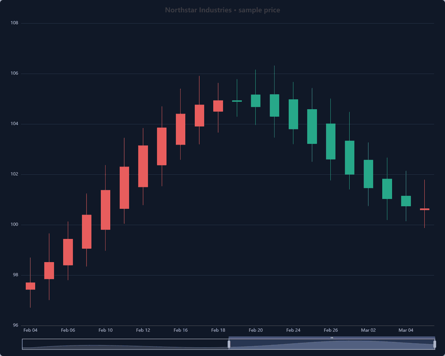
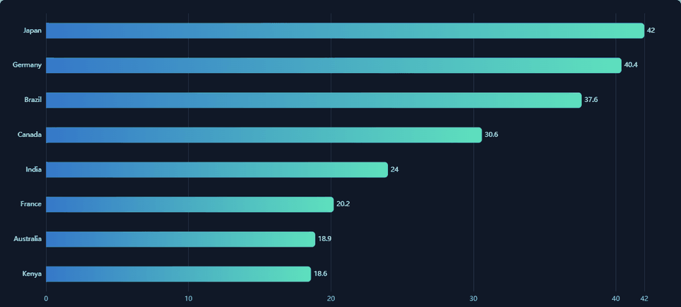

Usage guide¶
Create a Dash app and provide a JSON-compatible ECharts option to
DashEChartsX:
from dash import Dash, html
from dash_echartsx import DashEChartsX
app = Dash(__name__)
app.layout = html.Div(
DashEChartsX(
id="sales-chart",
option={
"title": {"text": "Quarterly sales"},
"tooltip": {"trigger": "axis"},
"xAxis": {
"type": "category",
"data": ["Q1", "Q2", "Q3", "Q4"],
},
"yAxis": {"type": "value"},
"series": [
{"type": "bar", "name": "Sales", "data": [120, 200, 150, 80]}
],
},
style={"width": "100%", "height": "60vh", "aspectRatio": "auto"},
),
style={"width": "90vw"},
)


An example detail page pairs an interactive chart with the Python setup used to create it.¶
Accessibility and themes¶
ECharts’ native ARIA and decal settings are accepted in the regular option. The component registers ECharts’ ARIA module so the option below enables accessible descriptions and decal patterns:
from dash_echartsx import DashEChartsX, register_theme
accessible_option = {
"title": {"text": "Accessible revenue by region"},
"tooltip": {"trigger": "axis"},
"aria": {
"enabled": True,
"decal": {"show": True},
"label": {"description": "Bar chart comparing revenue by region"},
},
"xAxis": {
"type": "category",
"data": ["North", "South", "West"],
},
"yAxis": {"type": "value"},
"series": [
{"type": "bar", "name": "Revenue", "data": [18, 25, 21]}
],
}
brand_theme = register_theme(
"brand",
{
"backgroundColor": "#f7f8fa",
"color": ["#3157a4", "#d57b2a", "#31866b"],
"textStyle": {"color": "#202124"},
},
)
chart = DashEChartsX(
id="revenue-chart",
option=accessible_option,
theme=brand_theme,
style={"width": "100%", "height": "60vh", "aspectRatio": "auto"},
)
Pass "light" or "dark" to theme for the built-in palettes, or
reuse the descriptor returned by register_theme across components and
callbacks. The helper returns JSON-compatible data; the browser registers the
named theme before initializing each chart. ECharts theme changes recreate the
chart instance because themes are applied during initialization.
Update the theme prop from a Dash callback to switch palettes while the
app is running:
from dash import Input, Output, callback
@callback(Output("revenue-chart", "theme"), Input("dark-mode", "value"))
def switch_chart_theme(is_dark):
return "dark" if is_dark else "light"
Exporting chart images¶
ECharts’ native toolbox.feature.saveAsImage is available in option.
Its pixelRatio setting can produce high-resolution PNGs:
option = {
"toolbox": {
"show": True,
"feature": {
"saveAsImage": {
"show": True,
"type": "png",
"name": "quarterly-sales",
"pixelRatio": 3,
}
},
},
"xAxis": {"type": "category", "data": ["Q1", "Q2", "Q3"]},
"yAxis": {"type": "value"},
"series": [{"type": "bar", "name": "Sales", "data": [120, 200, 150]}],
}
For callback-driven downloads, return a new download_chart request from a
Dash callback:
@callback(
Output("sales-chart", "download_chart"),
Input("download-png", "n_clicks"),
prevent_initial_call=True,
)
def download_sales_png(_):
return {
"type": "png",
"name": "quarterly-sales",
"pixelRatio": 3,
}
Set type to "svg" for a vector download and set the chart’s
renderer="svg". Callback downloads accept optional backgroundColor and
name; raster pixelRatio values such as 2 or 3 scale the output for
publication. Use the ECharts toolbox for its native PNG/JPEG controls, or
download_chart for callback-triggered PNG/SVG downloads.
Binary datasets for WebGL charts¶
Dash normally serializes component properties as JSON. For large numeric
datasets, BinaryDataStore serves a packed NumPy array from a short-lived
same-origin HTTP endpoint instead; only its URL, dtype, and shape travel in the
Dash option. Install the optional NumPy dependency with
pip install "dash-echartsx[binary]". Create the store before the Dash server
starts, then register arrays from the layout or callbacks:
import numpy as np
from dash import Dash
from dash_echartsx import BinaryDataStore, DashEChartsX
app = Dash(__name__)
binary_data = BinaryDataStore(app)
points = np.random.default_rng(42).random((120_001, 3), dtype=np.float32)
app.layout = DashEChartsX(
id="large-scatter",
enable_gl=True,
option={
"dataset": {
"dimensions": ["x", "y", "z"],
"source": binary_data.register(points),
},
"grid3D": {},
"xAxis3D": {"type": "value"},
"yAxis3D": {"type": "value"},
"zAxis3D": {"type": "value"},
"series": [
{
"type": "scatter3D",
"encode": {"x": "x", "y": "y", "z": "z"},
"symbolSize": 2,
}
],
},
)
register accepts one- or two-dimensional NumPy arrays with float32/float64
or 8-, 16-, and 32-bit signed/unsigned integer types. ECharts dataset
dimensions must describe the columns of a two-dimensional array. The
helper leaves the input unchanged and packs non-contiguous or big-endian arrays
into a contiguous little-endian buffer. Each array is limited to 256 MiB; the
per-app cache is limited to 512 MiB/256 entries and URLs expire after five
minutes. These opaque URLs are not an authorization boundary: only use this
transport for data that every user able to access the chart is allowed to
download.
For an ECharts-GL surface, register an (rows * columns, 3) array of
x, y, and z values as series.data and set dataShape to the
surface’s [rows, columns] grid dimensions.
To compare 3D WebGL rendering with dcc.Graph on the current machine, run
the opt-in benchmark (the default test suite skips it):
$env:DASH_ECHARTSX_RUN_BENCHMARKS = "1"
uv run pytest tests/test_webgl_benchmark.py -m performance -s
It reports median browser time from chart selection to ECharts’ finished
and Plotly’s plotly_afterplot events, plus JSON serialization time and
uncompressed data sizes for 120,000 points. Browser time includes the Dash
callback, data delivery, and render event.
One run on Windows 11, Python 3.12.10, NumPy 2.5.4, Plotly 7.1.0, and Chrome 155.0.0.0 produced:
Measure (median of 3 samples) |
DashEChartsX |
|
|---|---|---|
Uncompressed data and option JSON |
1,440,399 bytes |
2,388,949 bytes |
Python Dash JSON serialization |
0.03 ms |
61.59 ms |
Browser callback-to-render |
719.3 ms |
3,334.8 ms |
The binary array registration itself took 1.49 ms in this run. These timings vary by GPU, driver, browser, and operating system; the benchmark prints environment details and per-sample values, so compare results on the same machine rather than treating this one run as a universal speed guarantee. The Plotly size uses Dash’s actual NumPy-to-JSON encoding (base64 typed-array data), not an expanded decimal-list estimate.
Drag the candlestick chart’s slider to change the visible date range:


Zoom into the financial chart with its slider control.¶
The gallery also includes animated examples, such as this bar race:


A short capture of the animated bar-race example.¶
The component supports canvas and SVG rendering, built-in and registered
custom themes, native ECharts ARIA/decal options, custom maps, event callbacks,
ECharts actions, incremental append_data, and optional ECharts-GL loading.
See the Python API and the
TypeScript component props for the generated API details.
JavaScript formatter functions¶
Use js_function for options that require an ECharts callback. The helper
marks reviewed JavaScript source for explicit browser-side compilation:
from dash_echartsx.utils import js_function
option = {
"tooltip": {
"formatter": js_function(
"function(params) { return params.name + ': ' + params.value; }"
)
}
}
Marked source is executable code, not a sandboxed expression. Never build it
from user input or other untrusted data. Compilation requires a Content Security
Policy that allows unsafe-eval.